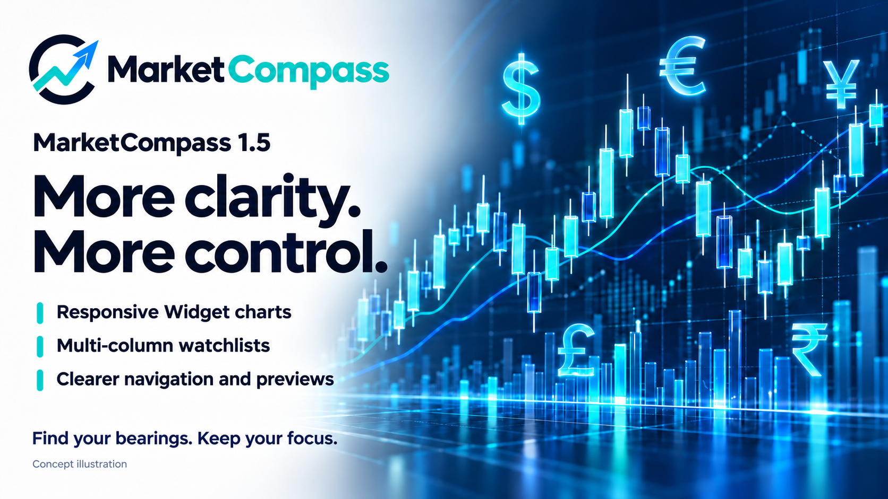
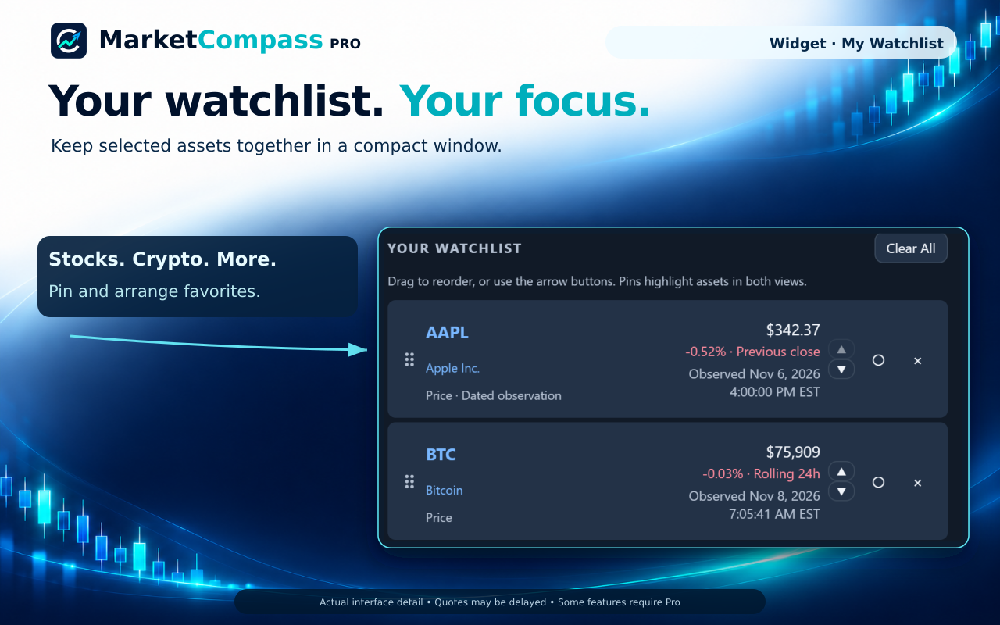

Explore the bigger picture
Browse major indices and asset classes, review historical performance, and use portfolio tools in a full-page workspace.
For Chrome & Microsoft Edge
Follow the markets, organize your watchlists and track your portfolio without losing your place in the browser.
Available now on Chrome and Edge

MarketCompass highlights
Quotes may be delayed, and data availability varies by source and instrument.
Use Market Pulse to scan across asset classes. Open Quick Chart links to external chart providers, or view daily charts for selected U.S. Treasury yields and currency pairs. Quote timestamps show when the displayed data was observed.
Install the current published release from the Chrome Web Store or Microsoft Edge Add-ons.
One workspace. Three ways in.


Browse major indices and asset classes, review historical performance, and use portfolio tools in a full-page workspace.
Use a separate compact window for the market overview and your watchlists while you work.
Open MarketCompass from your browser toolbar for compact access to your watchlists and tools.
See MarketCompass in action
Narrated and captioned visual tours of the Dashboard, Widget and Popup, using genuine application screenshots. Pro interface shown.
A quick introduction to your MarketCompass workspace.
Explore the Dashboard, Widget and Popup in more detail.
These are visual tours, not recorded click-by-click demonstrations. Captions are included in the videos. Sample dates and values are illustrative, not current quotes. Financial information, not investment advice.
More than a single market
Follow stocks, bonds, ETFs, mutual funds, commodities, cryptocurrencies, currencies and indices. Explore selected private-company information, financial news and a calendar.
Available fields and historical periods vary. Some sources require your own API key; daily or reference data is not a live quote.
See the product tour →
Start focused. Grow when you need to.
Start with one watchlist, price-target alerts and a portfolio. Pro expands your allowances and adds transaction accounting and allocation breakdowns. With Portfolio Checkup, Pro users can compare holdings with allocation targets they set.
See the full comparisonPortfolio records and preferences are saved locally. Market requests and Pro licensing connect to external providers.
Read the Privacy Policy →Product availability
Install MarketCompass from the official Chrome Web Store or Microsoft Edge Add-ons listing below.
Install the current published release from the Chrome Web Store or Microsoft Edge Add-ons.
Installation is handled by the Chrome Web Store or Microsoft Edge Add-ons. This website does not host extension files, account registration or payments. Pro purchases are handled through hosted checkout accessed from the extension.